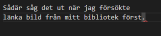

–How is it that you can love someone even more with time?" "–Because the longer the story, my love, the more you fill the book.
Entry #1 - Fick mig en rejäl snilleblixt att efter ha irrat omkring på denna sfär vi lever på i, snart, 32 år har jag bestämt för att börja koda... och att försöka göra det bra!
Med hjälp av Google, Youtube, diverse sidor som det verkar finnas miljontals av och sist men absolut inte minst kodar-gurun, tillika mina gamla lärare, Sir Claeson!
Så... vad kan då vara bättre än att skriva lite om denna resa. Jag gjorde det för en herrans massa år sedan, men jag hade inte motivationen då som jag har nu. Motivationen,
som trycker på mig i ryggen, i en rejäl uppförsbacke verkar ha kommit på senare dagar. Den behövs.
Klart det ska snyggas till osv i texten med diverse element jag ännu inte lärt mig. Men det kommer!
Har suttit vid datorn sedan jag kom hem från jobbet idag, så det har blivit ett par timmar med tanke på
att jag slutade mycket tidigare än vanligt. Har lyckats följa en guide på youtube som visade
mig hur bakgrundsbilden fadear till en annan. Listan i toppen hade jag en lång genomgång med gurun på igår kväll.
Sociala medier-saken följde jag en guide via en sida som heter wc3Schools. Jädra meck. Nu har jag försökt att lista ut hur man får upp den till
listan längst upp. Tanken är att det ska vara den gråa bakgrunden och sedan bli loggans färg när man hovrar över den med musen.
Nu ligger de i olika typer av listor och det ska förmodligen in i samma som min "Navigation Bar". Men jag fattar fortfarande inte efter mycket om och men, haha...
Kan inte riktigt med att fråga gurun hela tiden. "Hittade vid första googlingen" kommer sägas. Säkert en sida jag varit inne på, försökt med det
misslyckats, gått vidare. Men när han gör fungerar det med en gång. Aja, blir la till att fråga ändå... Mycket, mycket jobb kvarstår! End of Entry 1.
Entry #2 -
Nyss hemkommen från jobbet, fick sluta lite tidigare idag, rätt slappt nu när det är sommarfritids bara. Gått och finurlat lite på vad jag ska lägga till.
Gurun kom med idén om att lägga till bilder också i utvecklingen så man kan se hur jävla illa det ser ut ibland, haha.
Skitbra tänkte jag, då kan man ju lära sig image-elementet bättre, lär finnas hur mycket som helst där.
Inte kommit så långt, sitter och testar saker. Som att länka en bild som ligger på datorn istället för att kopiera en URL. Går faktiskt väldigt dåligt.
Lyckades ta mig fan genom att testa mig fram mer. Tydligen behövde man en "/" framför där bilden/bilderna låg. Antar att den med hjälp av "/" letar i den mappen.
Haha, ser la sådär ut. Men närmare än jag var innan. Om man hovrar över kod-bilden där ploppar det upp hur det såg ut på sidan. Så nu ska jag försöka
få till så att bilderna är lika stora. Borde ju inte vara så satans svårt... eller? Det får, eeh... vara så så länge, trial and error. Man är ju fortfarande novis.
Hade ju varit roligt att göra så att bilderna kom i linje med... Eller så ska det kanske ligga under. Vi får se Kan det vara någon align-sak? top %? Vad vet jag vet, dags att ta reda på.
Och den där linjen där... Jag bara kopierade rakt av. Borde läsa vad och hur stylingen görs. Fick göra ett sådant vanligt chatt-hjärta, får bli ett riktigt senare.
Lyckades göra så att "Vad fan gör jag här" tar en till själva texten på sidan. Och sociala-medier-baren får jag göra något åt. Samt åt skrivdelen. Ser la sådär rolig ut.
Dryg timma har gått, tycker jag fått gjort en del ändå men det är la småpotatis egentligen.
Haha, börjar på nya idéer till sidan hela tiden, lite där och lite här. Roligt är det i alla fall! :)
Heeeeerregud vilken tid det tog att göra ett litet bildbibliotek... Hade ingen koll alls på vad jag gjorde ibland trots att jag slaviskt följde guiden. Bilder som inte passar osv osv.
Men till slut så, lyckades det bli något som inte ser allt för hemskt ut. Nu kan man trycka på bilder i min main-navigation och komma till bilder, samt trycka tillbaka på bild-sidan för att komma tillbaka hit
Och vad i hela friden... Lyckades jag flytta mitt block-element dit jag ville utan att googla eller fråga? Kanske lär jag mig ett och annat ändå. Absolut position, % hit och % dit, block, inline-block hit och dit.
Klockan är nu 21:08 och jag har bara tagit matpaus och kikat på senaste avsnittet av Ms. Marvel. Alltså, fick till en massa saker så som jag tänkt mig, sedan om det är det mest "rätta" sättet eller inte är frågan.
Helt ärligt är jag faktiskt nöjd! Visserligen har jag ju inte så mycket kod än va, men jag är mycket förvirrad ibland så får använda kod-inspektören för att hitta nu.
Bra med att öva på sin egna sida, haha. End of Entry 2.

Entry #3 - Hemkommen från arbetet, vattnade de stackars växterna som griper efter varje halmstrå för att överleva. Dagens att-göra-lista består av att ändra hover-effekt på...
Vill säga att det var ul jag hörde igår om att den behöver få effekten och inte dropdown-menyn där. Kan minnas fel, glad om jag förstår 30% av det som sägs och ännu gladare om jag kommer ihåg 15%.
Så...
Göra så att sidan anpassar sig efter skärmens storlek.
Hover-effekten på menyn.
Massa, massa annat.
... ypperligt tillfälle att göra en lista ju. Redan stött på 100 problem. Lyckats lösa ett par, men väldigt många återstår. Som varför denna entryn lägger sig åt höger och inte alls beter sig som mina andra paragraf-element gör.
Och min linje har blivit asful. Haha, går bra... Efter att ha klippt ut mina fail-bilder lägger sig denna entry som den ska.
Så jag tänker att det borde vara något med mina images. Forskning pågår. Hade med position absolute att göra, fick bli relative. Och där fungerar inte hover-effekten på 2 av 3 bilder i bloggen, haha... blir tokig.
Löste det med, hade glömt en div som slut-tag. Gråter lite över min fina horisontella linje med som är trasig. Himla meck med diverse, har säkert massa fusk och "fel". :D Men några saker fungerar ju åtminstone
och det är ju kanon! Men själva designen och strukturen för texten här bör ju ordnas, ser sådär ut. Har än så länge bara hunnit med punkt 3 på listan...
Det blir en satans massa timmar, men det känns inte som det. Vilket påminner mig om en annan sak. AAAAAAH! Såg ju helt ok på offline-servern, slängde upp på github och det ser fan inte klokt ut. Haha...
Tog bort bilden och laddade upp till github på nytt och när jag refreshar github ser det ut som det ska, i väntan på att bilden förmodligen försvinner, spännande. :)) Kom ju också på den briljanta idén att
man kunde sätta max width på paragraf-elementet, slipper jag använda mig av 1000 breaks. Tumme upp på den! End of Entry 3.
Entry #4 - Finns det något bättre än en vacker sommarmorgon? Förmodligen, men vaknar man utan att somna om så är det betydligt trevligare med sol och hopp om en härlig dag
än regn som öser ner. Kom innanför dörren precis, ställde in lite kylvaror i kylen, lite smått att tugga på och något kallt att dricka och en jävla massa fail i HTML och CSS, blir ju hur bra som helst detta.
Lyckades stryka av första punkten på gårdagens lista med hjälp, så klart... Kanske förstår mindre än vad jag tror? Haha, det är mycket att hålla reda på! Aja, lyckades med att behålla hover-effekten på min dropdown-meny,
lade till en hover-effekt på två stycken bilder så de blir lite större, så man kan se mer. Men bör fortfarande komma på något fräsigare för texten. Såg en massa coola saker i går, en aningen komplicerade än bara.
Tänkte mig kanske ett element med bara "Entry" i och antingen hover eller active över så dyker hela entryts text upp. Hittade en cool effekt, det var javascript och grejer i men det har jag ingen aning om än.
Ah just det, lade till lite bilder men några av dem passar inte min box, haha... får jag lista ut hur man gör med.
Blir fan tokig! Försöker ändra storleken på en bild men den ändrar sig inte. Jag antar att det är något annat som vinner över. Lyckades med det till slut, var väl inte specifik nog i min kod så pillade lite.
Meeen, nu ska jag göra skiten rund och det får jag tydligen inte, haha...
Eeeh, nu passar en bild i min cirkulära figur i alla fall. Följde en sida, men blev inte alls så som den blev. Fick lägga till lite egna saker i stylen. ;D
Ah men tusan... Ser väl helt ok ut, lite snett och lite vint, men det får jag leva med lite tycker jag! Lyckades alltså med ha kvar hover-effekten på menyn till dropdown, hover-effekt på bilderna,
slänga in en rund profilbild, gav även bordern till bilden lite kärlek med hjälp av hover. Det är mycket hover nu, niiice! Och kanske behöver lite nya bilder på en själv, man är ju inte direkt fotogenisk.
I mitt försök att inte ändra hur bred sidan blev när man hovrar över dagens fails slängde jag in the right: xx% för att försöka flytta den lite innåt. Det fungerade, om det blev rätt eller inte är en annan sak.
Haha, jag fattar fortfarande inte riktigt hur position fungerar tror jag. Fungerar bara för mig att flytta runt dem och härja när jag använder absolute, och det skulle jag nog försöka undvika om jag inte minns fel.
Hittade en nice border transition för min cirkel, men jag är för dålig, lyckas inte... Haha, man har sett så mycket ascoola saker och hemsidor folk gjort på youtube och önskar man kunde göra likadant.
Hoppas att det kanske kommer. Det hoppas flitigt mellan idéer och i vilken ordning dessa görs, välkommen till kaoset i hjärnan!
Oklart om jag gjorde rätt med time-tagen, haha. Aja... Datumet är ju med i alla fall. Ska komma ihåg att skriva vad som ändrades med så det blir rätt i "commiten". Får godkänna dagens arbete i alla fall, blev ännu ett par timmar.
Men jag får göra något åt texten alltså... Början på sidan ser ju faktiskt inte så tokig ut ändå. Kanske kan man ha "entry" i någon form av boxar med någon ball effekt? Ja, jag tycker om balla effekter...!
End of Entry #4
Entry #5 - Började dagen med ett litet pass där jag använde mig av javascript för första gången för att försöka skapa någon form av layout för text-innehållet. En grundtanke i alla fall.
Försökte även göra den i CSS och det går la sådär om jag ska vara ärlig, haha. Ser förjävligt ut och det fungerar inte alls som jag vill. Efter morgonens session så planterade jag om lite växter, skulle ut och springa men fastnade hos en polare
med lite bad och solning, och ett par öl blev det ju också såklart under dagens gång. Hängde ett par timmar för att sedan åka hem och sätta mig igen. Funderade på om man skulle göra någon form av grid-template som jag läst om. Också lite andra lästips av
gurun. Sedan började jag följa några konton på instagram med massa saker jag skulle vilja göra. Min stackars hjärna exploderar snart, herregud vad mycket. Men kul är det! Ska sitta och pilla en stund till och se om man kommer fram till något vettigt
eller om man ska gå och lägga sig. Såg nu också när jag öppnade med liverservern för att se hur detta inlägget blev att mina bilder verkar inte vilja komma med... Skit också. Verkar inte som att sökvägen är rätt tydligen. Trööööött man blir alltså. Ännu ett problem att lösa.
End of Entry #5
Entry #6, Är jag en CSS-gud nu?! Nope. - Haha, det är mycket problem i kodning nu. Redan avverkat alldeles för många timmar med att försöka lista ut och undersöka vad problemen kan vara. Jädra tur man har extern hjälp från gurun alltså.
Det var rött lite hit och lite dit pga av lätta missar. Någon sak i roten som ploppade upp och satte mina images ur spel. Försökt mig på att göra någon form av layout for texten här med användning av grid. Återstår ju bara det "lilla" problemet att man ska få upp
en sak som täcker en bit av skärmen genom att antingen klicka eller hovra och att då layouten är inne i den rutan. Tycker väl inte det borde vara så svårt. Man tänker att det ska vara lätt. Men för rena rama nybörjaren blir det nog ett par timmar google/youtube osv.
Tänker mig något i stil med bilderna, för tillfället... kan lätt ändra sig om ett par timmar och då sitter man och försöker skapa någon annan form. Vilket ju kanske är bra, mer kodning = mer inlärning. Och att den förbannade runda profilbilden jag lyckades få till
nu mera är en kvadrant för man såg en kvadrat bakom det runda vilket gjorde mig lite irriterad så jag lade ned det problemet för tillfället. Aja, den får vara där... Denna sidan är ju till för utbildningssyfte ändå så. Gick la sådär på förmiddagen, lite trött osv osv.
Sedan for jag iväg på lite kalas, mycket trevligt. Sedan var det hem igen för att testa på lite nya saker. Får väl ändå säga att jag tycker kvällens arbete har varit helt godkänt, testade på lite saker jag inte testat på innan, och inte allt för mycket blev fel... tro det eller ej!
Skapade något som det ser ut som en enhörning spytt upp ungefär. Men färg är ju trevligt. Har ju också 300 tabs uppe varje gång att hålla reda på, blir en aningen stökigt i hjärnan, stökigare än vanligt alltså. Jaja... bilderna får la överlappa och det
får se förjävligt ut ett långt tag, men det går ju framåt åtminstone. Ooooch.... tydligen får jag inte ladda upp på github. Får bli en fråga för gurun i morgon tror jag. Men för nu, End of Entry #6
Entry #7, - Suttit ett par timmar om kvällarna här nu och arbetat på min privata server för att testa lite nya saker. Satans roligt. Men vissa saker är lite halvsvåra men det känns
som att vissa saker börja sätta sig i den gråa materian som skvalpar omkring i någon vätska. Haft bekymmer med att inte kunna ladda upp till mitt "repository" som det så tjusigt heter så att min online-sida, som du befinner dig på, uppdaterats med saker
Förhoppnigsvis kommer det till kvällen. Eller ah, så många saker kommer den la inte uppdateras med. Lite text, någon eller några bilder och förmodligen ett par fel i sin vanliga ordning. Tråkigt att göra allt rätt med en gång ju.
Nästa steg på min långa färd med mina kort steg blir "flex". Så det ska undersökas! Jag undrar hur mitt första försök till att skapa en "dagens ord-sida", som jag gjorde för några veckor sedan skulle sett ut med det jag lyckats ta in nu.
Förstår fortfarande inte den bakomliggande orsaken till att jag ibland inte kan ändra saker... och hur det ibland går precis som jag vill, haha. Det är väl såklart saker som overwritar massa. Till exempel att jag har p (paragraf) att den ska vara
si och så stor, ha den färgen, den stilen osv. Sedan har jag en specifik p som man döpt till "entrytext" till exempel och med den händer det ingenting. Hah, blir alldeles tokig ibland. Blivit en flitig användare av code-inspector nu faktiskt.
Kanske inte är det vackraste människan skådat men det är ju bättre än hur det ser ut nu i alla fall.
End of Entry #7
Entry #8, - Satt och pillade lite som ju har blivit standard efter jobbdagen, mer jobb hemma. Det är minst sagt variation på mitt proffesionella yrkesliv och hobbyn
jag ju tycker är fantastiskt rolig! Från inlinesåkning, gitarrspel, sommarlovsmorgon, iPad-användande, pärlande, målande och massa annat som hittas på under dagarna, till att fortsätta jobba hemma med en go spotify-spellista, grotta ned mig i HTML och CSS
och försöka komma någon vart i livet. :) Fick en tanke på att dela in bakgrunden i 4 sektioner, gärna i former av trianglar som möts i mitten, hur fan gör jag det? Oklart, googlat som en dåre... kan eventuellt ha snubblat på något som kan leda mig dit.
Under forskningsstunden hör jag ett messenger-ljud från telefonen. Då har jag fått lite bakläxa av gurun. Bäst att fixa det innan jag fortsätter med det jag påbörjade när jag kom. Tabbade mig genom att ha fler IDn än vad man får, man ska hålla sig till ett.
Ändrade mitt "ID" till en "Class" vilket fungerade precis som det skulle. Ändra mina blogg-element till att vara relativt positionerade, kan eventuellt ha lyckats, förmodligen inte. Mer troligt än inte att jag missförstod, men det mesta gick bra. Det är bara
en av alla bilder som försvinner åt tjotahejti (stavningskontroll på den, tack...). Den syns när jag ändrar den bildens position till relative, men om den är absolut vill den inte vara med och leka mer. Mycket förvirrande! Nu har profilbilden spårat ut
och försvunnit med. Haha... Har så ofantligt mycket mer kod nu än vad jag tidigare försökt förhålla mig till så blir heeeeelt snurrig ibland alltså. Aja, man ju långt ifrån målet så det är bara att fortsätta den lätta joggen.
Tror att jag lyckats åtgärda det som
jag fick i läxa. Det märker vi. Bakläxa är ju roligt annars. Suttit och pillat och försökt komma på egen layout för första sidan och inte härma något eller något. Idén var att dela upp det i trianglar men jag fattade nada. Fick lekt lite med scewX och scewY för att
se vad det var för något. Skoj skoj! Slutade med klassiska rektanglar. Tydligen är en kvadrat en rektangel men en rektangel är ingen kvadrat. Slänger upp en bild. Ah just det, bokstäverna snurrar. Erkänner att det skrev jag faktiskt rakt av, rena rama
plagiatet faktiskt. Tanken är då att rutorna är en länk som leder till något. Den första bilden namngiven square1 går till själva bloggdels-konceptet som jag filar på. Man kan säkert fila på saker i evigheter här. SKulle ju dock vilja att rutan "FIGGE.JOH"
att bordern jag satt på bilderna, att den syns igenom. Sååå... jag vill ha den transparent fast ändå inte? Hah. Ens dilemman i livet kan onekligen se annorlunda ut. Tog mig en paus i stöket och kikade in nya Dr Strange som släpptes idag på Disney+. Mycket cool.
Också spännande att jag inte ser profilbilden på den privata servern men den är som den ska på live-sidan... Tumme upp! Problem som löser sig själva är ju fantastiska problem. Samt att de förbannade bilderna som ska ligga vid entry 5 fortfarande leker kurragömma.
End of Entry #8